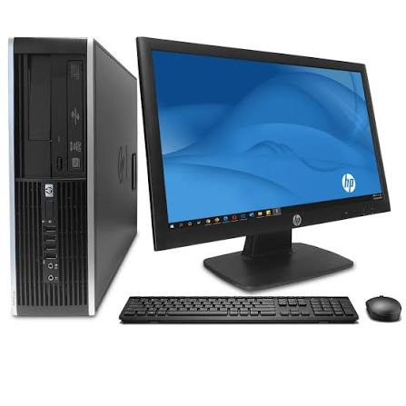

Bienvenidos a Nuestro Taller
Brindamos soluciones integrales de software y hardware para todo tipo de equipos de cómputo. Nos especializamos en reparación rápida, mantenimiento preventivo y optimización de rendimiento.
Productos que Reparamos
A continuación se muestra el catálogo de equipos que atendemos en nuestro centro de soporte:
| Producto | Descripción del Servicio | Garantía | Imagen del producto |
|---|---|---|---|
| Laptops / Portátiles | Cambio de pantalla, teclado, batería, reparación de bisagras y limpieza de ventiladores. | 3 Meses | .jpg) |
| Computadoras de Escritorio (PC) | Reemplazo de fuente de poder, formateo, actualización de memoria RAM y disco SSD. | 3 Meses |  |
| Computadoras para juegos / Alto Rendimiento | Cambio de pasta térmica, limpieza profunda de tarjeta de vídeo y optimización del sistema. | 3 Meses | .jpg) |
| Monitores | Reparación de tarjeta de encendido, cambio de fuentes externas y capacitores dañados. | 1 Mes | .jpg) |
| Impresoras | Mantenimiento de cabezales, eliminación de atascos de papel y recarga de tóner/tinta. | 1 Mes | .jpg) |
| Consolas de Videojuegos | Limpieza interna, cambio de pasta térmica y reparación de puertos HDMI. | 2 Meses | .jpg) |
Formulario de Solicitud de Soporte Técnico
Llena el siguiente formulario para agendar una revisión o recibir una cotización de tu problema: